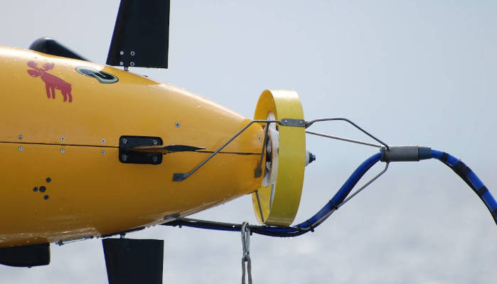

Autonomy
MOOS-IvP
Open-source C++ modules for autonomy on marine vehicles, with the IvP Helm multi-objective decision engine.
C++MOOS
apt package
Mike Benjamin, MIT
Open Ocean Software is an NSF POSE project for open-source software in marine robotics: autonomous underwater and surface vehicles, moorings, drifters, and the sensors, data acquisition and simulation around them. We help existing projects with trust, discovery, interoperability and packaging, and we're growing the community through events and the forum.
Browse all member projects →
The first member projects come from the team's own labs. Each one keeps its own home page. New projects join through peer review.
Open-source C++ modules for autonomy on marine vehicles, with the IvP Helm multi-objective decision engine.
Shared ROS 2 libraries and tools for underwater vehicle operations from Woods Hole Oceanographic Institution. Successor to DS_ROS.
ROS interface to the WHOI Micromodem and transport of ROS messages across an acoustic link, with simulation. Supports ROS 1 and ROS 2.
One framework for vehicle collaboration across acoustic and satellite links, interprocess, and interthread communications.
Compact message marshalling for very low-throughput links such as acoustic modems and satellite.
Maintain open-source software for marine robots? Tell us about it on the forum. Member projects get a page in this directory and, once they have tagged releases, signed Debian packages.
How to join →Packaging, security and outreach are more than most small projects can run on their own. We run them once for every member project, and each project keeps its own code and roadmap.
Packages are built in a public pipeline and GPG-signed. Member repos on GitHub show their OpenSSF Scorecard.
One directory and one forum, so you can find the project and the person who maintains it.
We're working toward maintained bridges between ROS 2, MOOS-IvP, Goby and LCM. Today only Goby ↔ MOOS is production grade.
Binary packages, so you can apt install instead of building from source. MOOS-IvP and DCCL are ready now, and more projects follow as they're packaged.
Whether you use ROS, MOOS-IvP, Goby or something else, we want your input on tools, interoperability and community infrastructure.
Take the survey →· Monterey, CA
Expert panel and open discussion.
· National Oceanography Centre, Southampton
Talks and discussion after IEEE OES AUV 2026.
We maintain MOOS-IvP, Goby, DCCL, ros_acomms and WHOI-ROS, and between us have decades of field time on AUVs.
Meet the team →